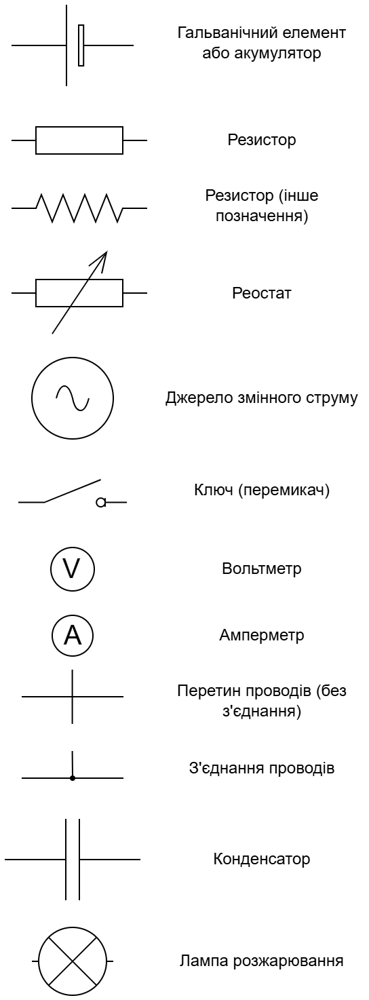

Електричний струм та закон Ома#
Що таке електричний струм?#
В металевих провідниках атоми формують упорядковану кристалічну структуру. У вузлах цієї структури розташовані позитивно заряджені іони, а між ними вільно переміщуються електрони. За відсутності зовнішнього електричного поля рух електронів є хаотичним і нагадує рух молекул газу.
Коли до провідника прикладається зовнішнє електричне поле, до хаотичного руху електронів додається спрямований рух проти напрямку поля (електрони починають рухатись в напрямку протилежному напрямку вектора напруженості електричного поля, бо саме в цьому напрямку вони притягуються електричним полем; це можна порівняти із притяганням негативного заряду до позитивного заряду, де на негативний заряд діє сила протилежна напрямку напруженості електричного поля). Саме цей упорядкований рух і становить суть електричного струму.
Електричний струм – це напрямлений (впорядкований) рух електрично заряджених частинок.
Важливо зазначити, що носіями електричного струму можуть бути різні заряджені частинки:
У металах — це електрони
В електролітах — позитивні та негативні іони
В газах — електрони, позитивні й негативні іони
У напівпровідниках — електрони та "дірки" (відсутність електрона в атомі)
Позитивні іони рухаються у напрямку напруженості зовнішнього електричного поля, а негативні – у протилежному напрямку.
Для виникнення та підтримки електричного струму необхідно забезпечити дві ключові умови:
Наявність вільних заряджених частинок, які можуть переміщуватися під впливом електричного поля
Створення та підтримка електричного поля, яке надає зарядженим частинкам спрямованого руху
Для створення електричного поля використовуються різноманітні джерела струму — пристрої, які перетворюють інші види енергії в електричну.
Принцип роботи будь-якого джерела струму полягає в розділенні різнойменних зарядів, внаслідок чого один полюс набуває позитивного заряду, а інший — негативного. Ця різниця потенціалів створює електричне поле, яке змушує заряджені частинки рухатися.
Серед найпоширеніших джерел струму:
Гальванічні елементи та акумулятори — перетворюють хімічну енергію на електричну
Електромеханічні генератори — перетворюють механічну енергію на електричну
Сонячні батареї — перетворюють енергію сонячного випромінювання на електричну
Термоелементи — перетворюють теплову енергію на електричну
П'єзоелементи — перетворюють енергію механічної деформації на електричну
Що таке електричне коло?#
Електричне коло - це сукупність пристроїв, що забезпечують шлях для проходження електричного струму. Найпростіше електричне коло складається з:
Джерела струму
Провідників
Споживача електричної енергії
Комутаційного пристрою (вимикача)
Схематичне зображення електричного кола з використанням стандартних умовних позначень називається електричною схемою (електричне коло). Ці схеми допомагають зрозуміти принцип роботи електричних пристроїв та систем.
Важливі умовні домовленості:
За усталеною конвенцією, напрямком електричного струму вважається напрямок руху позитивно заряджених частинок, тобто від позитивного полюса джерела до негативного (це склалось історично, тут немає якоїсь особливої логіки). Варто зазначити, що в металевих провідниках реально рухаються негативно заряджені електрони в протилежному напрямку.
В умовному позначенні гальванічного елемента довга риска позначає позитивний полюс джерела, а коротка – негативний.

Рис. 1. Елементи електричної схеми (електричного кола)
Закон Ома, сила струму, напруга, опір#
Для кількісного опису струму в провіднику застосовують наступні фізичні величини:
сила струму \(I\) (характеризує власне електричний струм)
напруга \(U\) (характеризує поле, що створює струм)
опір \(R\) (характеризує сам провідник та елементи електричної схеми)
Сила струму \((I)\) — фізична величина, що характеризує інтенсивність руху заряджених частинок і дорівнює електричному заряду, який проходить через поперечний переріз провідника за одиницю часу:
\[I = \frac{q}{t}\]
де \(q\) — електричний заряд, \(t\) — час.
Одиниця сили струму в Міжнародній системі одиниць СІ – ампер (A).
Для вимірювання сили струму використовують прилад - амперметр, який вмикають у коло послідовно з ділянкою, де вимірюють струм.
Закон взаємодії струмів: два паралельні провідники однакової довжини притягуються, якщо струми в них течуть в одному напрямку, і відштовхуються – якщо в протилежних (взаємодія відбувається через магнітне поле, що створюється електричним струмом; про магнітне поле ми поговоримо згодом).
1 ампер дорівнює силі такого постійного струму, який, пропущений по двох прямих паралельних нескінченних провідниках із незначним поперечним перерізом, що поміщені на відстані 1 м один від одного у вакуумі, створював би на кожній ділянці провідників довжиною 1 м силу взаємодії \(2 \cdot 10^{-7}\) Н.
Електрична напруга \((U)\) — фізична величина, що характеризує роботу електричного поля \(A\) з переміщення заряду \(q\) по ділянці кола:
\[U = \frac{A}{q}\]
Одиниця напруги в Міжнародній системі одиниць СІ - вольт (В або V англійською).
Напругу вимірюють приладом — вольтметром, який підключають паралельно до ділянки, на якій вимірюють напругу.
1 В – це така напруга на ділянці кола, за якої електричне поле виконує роботу 1 Дж, переміщуючи по цій ділянці заряд 1 Кл:
Електричний опір \(R\) – фізична величина, яка характеризує властивість провідника протидіяти електричному струму.
Одиниця опору в Міжнародній системі одиниць СІ - ом (Ом).
1 Ом – це опір такого провідника, в якому іде струм силою 1 А за напруги на кінцях провідника 1 В:
Опір провідника, який має незмінний поперечний переріз, дорівнює:
\[R = \rho \frac{l}{S}\]
де \(\rho\) – питомий опір речовини, з якої виготовлений провідник, \(l\) – довжина провідника, \(S\) – площа поперечного перерізу провідника.
Питомий опір речовини – фізична величина, яка характеризує електричні властивості речовини та чисельно дорівнює опору виготовленого з неї провідника довжиною 1 м і площею поперечного перерізу 1 м².
Одиниця питомого опору в Міжнародній системі одиниць СІ – ом-метр (\(\text{Ом} \cdot \text{м}\)).
Питомий опір істотно залежить від температури.
Закон Ома для ділянки кола: Експериментально встановлено, що сила струму в провіднику прямо пропорційна прикладеній напрузі та обернено пропорційна опору провідника:
\[I = \frac{U}{R}\]